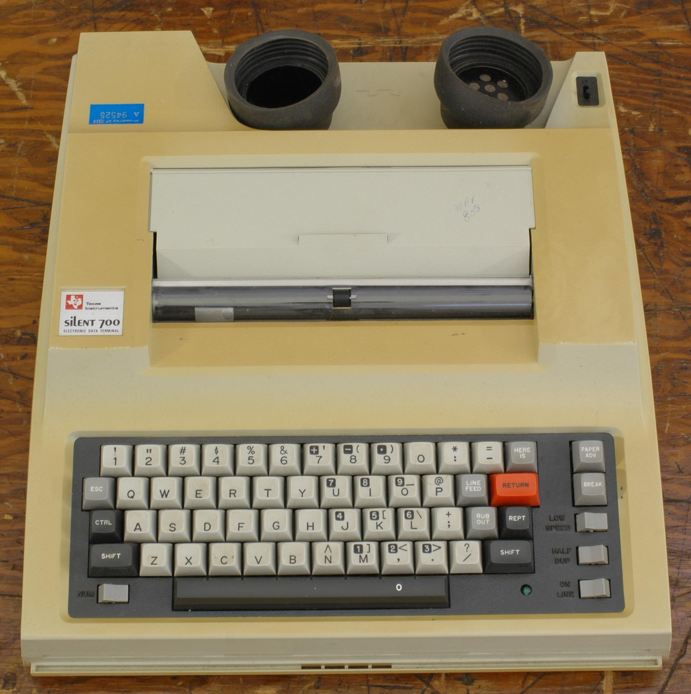
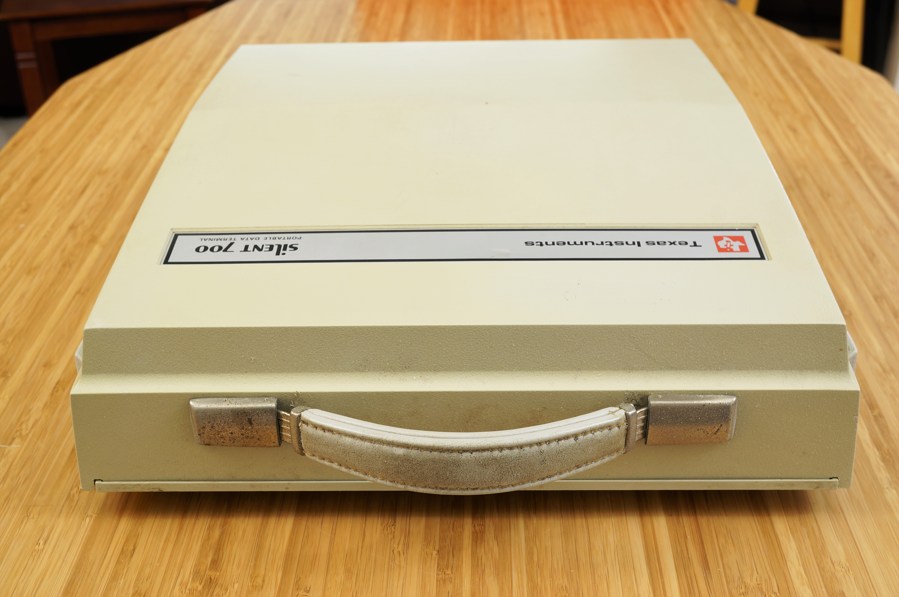
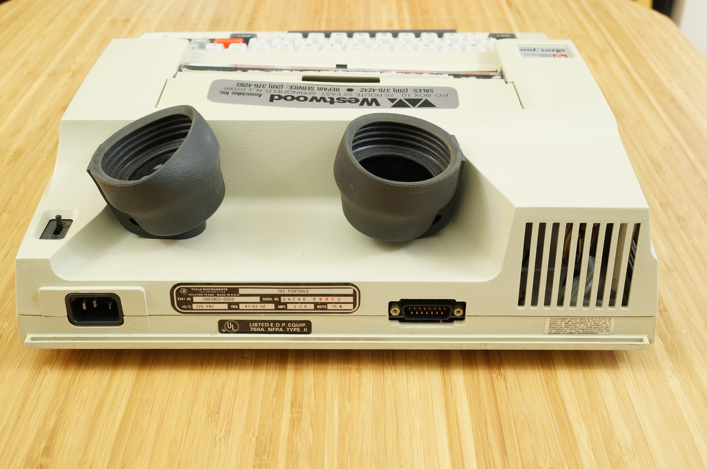

TI Silent 700
A 13-pound briefcase terminal — place a telephone handset into its rubber cups to go online

Overview
The Texas Instruments Silent 700 Model 745 was a self-contained portable data terminal in a 13-pound briefcase. It integrated a full keyboard, a 30-character-per-second thermal printer, and an acoustic coupler — two rubber cups built into the lid that accepted a standard telephone handset. To go online, the user opened the briefcase, dialed a number on a telephone, listened for the carrier tone, and pressed the handset into the molded cups. Data flowed through sound alone, at switchable speeds of 110, 150, or 300 baud. Priced at $1,995 in 1976, the Model 745 was used by field engineers, journalists filing stories from the road, and early adopters of CompuServe and The Source — making "going online" a physical ceremony involving rubber cups, thermal paper, and acoustic handshakes.
Deep dive
Texas Instruments introduced the Silent 700 series in 1971, drawing on its thermal printing expertise from calculator manufacturing. The Model 745, introduced in late 1975, was the definitive version: it added TI's TMS 9900 16-bit microprocessor and the integrated acoustic coupler that made it a truly self-contained portable terminal.
Each connection demanded the user's active participation. After dialing manually and listening for the carrier tone, the telephone handset was pressed into the two rubber cups — earpiece into one (containing a microphone to receive data), mouthpiece into the other (containing a speaker to transmit). If the connection dropped, the user had to pick up the handset, dial again, and repeat the entire physical sequence. This was computing as a hands-on, acoustic experience.
The Silent 700 printed on rolls of chemically-coated thermal paper that curled at the edges and darkened when exposed to light or heat. A page left in sunlight could become illegible within hours, forcing users to photocopy important documents onto plain paper. The ephemeral nature of the output created a unique interaction pattern: the terminal itself communicated impermanence.
Field service engineers for IBM, DEC, and HP accessed diagnostic systems from customer sites. Journalists filed stories from political conventions and disaster zones. Sales representatives checked inventory from hotel rooms. The Model 745 could operate from a car cigarette lighter, making it genuinely usable anywhere with a telephone line.
The Silent 700 represents a transitional moment: after the room-sized mainframe but before the desktop PC, when "portable computing" meant carrying a 13-pound briefcase that turned any telephone into a computer terminal. TI produced Silent 700 models through the mid-1980s, with the 780 series reaching 120 characters per second for 1200 baud connections.
Team & pioneers
- Texas Instruments, Terminal Products Division Developed and manufactured the Silent 700 series from 1971 through the mid-1980s. Leveraged TI's thermal printing expertise and TMS 9900 microprocessor.
Media

